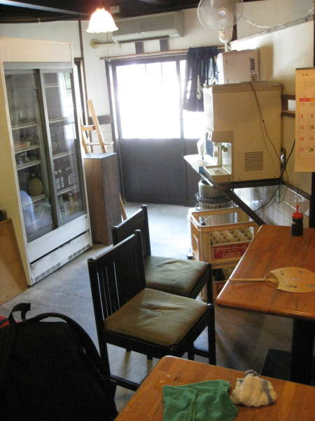
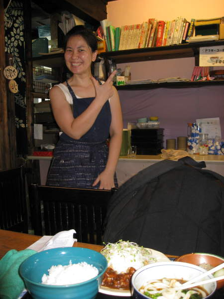
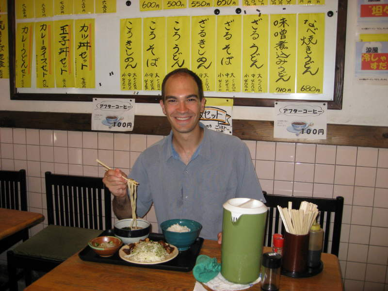
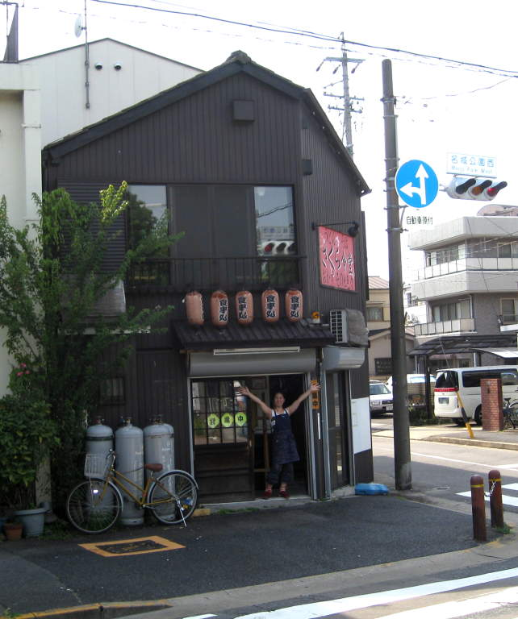

A restaurant in Nagoya
While
trying to find the aikido dojo, I found a building that looked like it
might be a dojo. I didn't see the building with the big "AIKIDO"
sign, so I ended up peeking in the windows of this place. It
looked like a restaurant, so I was going to keep searching.

This
lady came out of the shop and asked me what I was looking for.
She didn't understand too much, but she understood "aikido" and
pointed at the big "AIKIDO" sign looming over us. I thanked her,
then asked if I could eat. She prepared lots of food for me.
I especially liked the udon noodles. She was watching a
weird TV show showing a detective putting herself in the shoes of the
murder, imagining herself killing people like he did. It was
fairly gory, and I asked her if she liked that show. It was then
that I understood her English was really not that bad. She
explained to me how she liked the combination of drama and romance in
the TV show, then we proceeded to talk about Japanese baseball and I
showed her the video I recorded from the baseball game in Chiba.
She let me know she was a Hanshin Tigers fan, and they had a
better fanbase than my Chiba Lotte Marines. Hmph.

Me and my udon noodles!

She
liked my company a lot, and it was a very sad moment when I had to be
on my way to Nagoya Castle. I miss her and her udon noodles.
Back